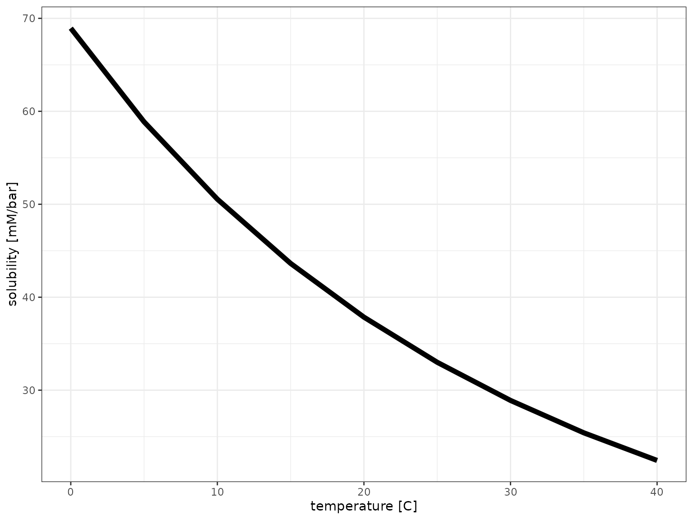

Carbonate Chemistry Examples
2020-10-17
Source:vignettes/carbonate_chemistry_examples.Rmd
carbonate_chemistry_examples.RmdThis vignette provides examples of the carbonate chemistry tools implemented by the microbialkitchen package to explore carbonate solubility and pH control in open and closed media systems. See the carbonate chemistry equations vignette for conceptual background.
CO2 solubility
solubilities <- tibble( temperature = seq(from = 0, to = 40, by = 5) %>% qty("C"), solubility = calculate_gas_solubility("CO2", temperature) ) solubilities %>% ggplot() + aes(temperature, solubility) + geom_line(size = 2) + scale_x_qty(unit = "C") + theme_bw()

Speciation
# calculate df_speciation <- tibble( pH = seq(3, 14, by = 0.1), DIC = qty(10, "mM"), `H2CO3*` = calculate_carbonic_acid(pH, DIC = DIC), HCO3 = calculate_bicarbonate(pH, DIC = DIC), CO3 = calculate_carbonate(pH, DIC = DIC) ) # visualize df_speciation %>% # pivoting longer for the concentration columns pivot_longer( names_to = "Species", values_to = "Concentration", cols = c(`H2CO3*`, HCO3, CO3) ) %>% ggplot() + aes(pH, Concentration, color = Species) + geom_line() + scale_x_continuous(expand = c(0, 0), breaks = c(1:14)) + scale_y_qty(each = TRUE) + theme_bw()

Open system
CO2 only
# range of pCO2s pCO2s <- tibble( pCO2 = qty(c(seq(0, 5, by=0.1), seq(5, 20, by=1), seq(20, 200, by=5)), "mbar") ) # range of temperature temperatures <- tibble( temperature = qty(c(10, 25, 37), "C") ) # calculate for all combinations df_pH_vs_pCO2 <- crossing(pCO2s, temperatures) %>% mutate( pH = calculate_open_system_pH(pCO2, temp = temperature), DIC = calculate_DIC(pH, pCO2, temp = temperature), CO2 = calculate_ideal_gas_molarity(pCO2, temp = temperature) )
df_pH_vs_pCO2 %>% # pivoting longer mixed data types requires explicit units first make_qty_units_explicit(DIC = "mM", CO2 = "mM") %>% pivot_longer( cols = c(pH, `DIC [mM]`, `CO2 [mM]`), names_to = "var", values_to = "value" ) %>% filter(!(var == "pH" & value > 5.5)) %>% mutate(temperature = as_factor(temperature, unit = "C")) %>% ggplot() + aes(pCO2, value, color = temperature) + geom_line() + scale_x_qty(expand = c(0, 0)) + scale_color_brewer(palette = "Set1") + facet_grid(var~., scales = "free_y") + expand_limits(x = 0) + theme_bw() + labs(y = NULL)

Adjusting pH with alkalinity
# to calculate how much base (NaOH or NaHCO3) to add calculate_open_system_alkalinity(pH = 6.8, pCO2 = qty(0.4, "mbar"))
## <C (molarity concentration) in 'µM'[1]>
## [1] 41.67307calculate_open_system_alkalinity(pH = 6.8, pCO2 = qty(50, "mbar"))
## <C (molarity concentration) in 'mM'[1]>
## [1] 5.220963calculate_open_system_alkalinity(pH = 6.8, pCO2 = qty(200, "mbar"))
## <C (molarity concentration) in 'mM'[1]>
## [1] 20.88414# to calculate pH with addition of a specific amount of base calculate_open_system_pH(pCO2 = qty(0.4, "mbar"), alkalinity = qty(5, "mM"))
## [1] 8.848121calculate_open_system_pH(pCO2 = qty(50, "mbar"), alkalinity = qty(5, "mM"))
## [1] 6.781229calculate_open_system_pH(pCO2 = qty(200, "mbar"), alkalinity = qty(5, "mM"))
## [1] 6.179416# to calculate pH with addition of a specific amount of acid calculate_open_system_pH(pCO2 = qty(0.4, "mbar"), alkalinity = qty(-1, "nM"))
## [1] 5.589293calculate_open_system_pH(pCO2 = qty(50, "mbar"), alkalinity = qty(-1, "nM"))
## [1] 4.541239calculate_open_system_pH(pCO2 = qty(200, "mbar"), alkalinity = qty(-1, "nM"))
## [1] 4.240209Visualization
# range of pCO2s pCO2s <- tibble(pCO2 = qty(c(0.4, 50, 200), "mbar")) # range of temperature temperatures <- tibble(temperature = qty(c(25, 37), "C")) # calculate for all combinations zero <- qty(0, "mM") df_base_vs_pH <- crossing(pCO2s, temperatures, pH = seq(3, 7.5, by = 0.05)) %>% mutate( ions = calculate_open_system_alkalinity(pH, pCO2, temp = temperature), `Add base (e.g. NaOH)` = case_when(ions > zero ~ ions, TRUE ~ zero), `Add acid (e.g. HCl)` = case_when(ions < zero ~ -1*ions, TRUE ~ zero), DIC = calculate_DIC(pH, pCO2, temp = temperature) ) p <- df_base_vs_pH %>% pivot_longer( cols = c(`Add base (e.g. NaOH)`, `Add acid (e.g. HCl)`, `DIC`), names_to = "var", values_to = "concentration" ) %>% filter(concentration > zero) %>% mutate( temperature = as_factor(temperature, unit = "C"), panel = as_factor(pCO2, unit = "mbar") ) %>% ggplot() + aes(pH, concentration, color = var, linetype = temperature) + geom_vline(xintercept = 7, color = "black", size = 1) + geom_line() + scale_x_continuous(breaks = 1:14, expand = c(0, 0)) + scale_y_qty(each = TRUE) + scale_color_brewer("Component", palette = "Set1") + facet_wrap(~panel, nrow = 1, scales = "free_y") + theme_bw() p

Log scale
# easier to see in log space and equal y axis + a vertical line p_log <- p + scale_y_qty(each = TRUE, trans = "log10") + facet_wrap(~panel, nrow = 1)
## Scale for 'y' is already present. Adding another scale for 'y', which will
## replace the existing scale.
p_log
Adjusting pH with a buffer
For simplicty keeping temperature constant at the default (25C).
buffer <- qty(c(1, 10, 50), "mM") # to calculate how much base (NaOH or NaHCO3) to add df <- tibble( buffer = buffer, add = calculate_open_system_alkalinity( pH = 6.8, pCO2 = qty(50, "mbar"), buffer = buffer, buffer_pKa = 7.5 ) ) df
## # A tibble: 3 x 2
## buffer add
## <C[mM]> <C[mM]>
## 1 1 5.39
## 2 10 6.88
## 3 50 13.5# what if buffer is mono-sodium? (negative means HCl or other strong acid required instead of base) df %>% mutate(add_if_salt_buffer = add - buffer)
## # A tibble: 3 x 3
## buffer add add_if_salt_buffer
## <C[mM]> <C[mM]> <C[mM]>
## 1 1 5.39 4.39
## 2 10 6.88 -3.12
## 3 50 13.5 -36.5# to calculate pH with addition of a specific buffer df %>% mutate( pH = calculate_open_system_pH( pCO2 = qty(50, "mbar"), buffer = buffer, alkalinity = add, buffer_pKa = 7.5 ) )
## # A tibble: 3 x 3
## buffer add pH
## <C[mM]> <C[mM]> <dbl>
## 1 1 5.39 6.80
## 2 10 6.88 6.80
## 3 50 13.5 6.80Different concentrations of weak acid (same pKa)
# range of pCO2s pCO2s <- tibble(pCO2 = qty(c(0.4, 50, 200), "mbar")) # range of buffers buffers <- tibble( buffer = qty(c(0, 20, 20, 20, 50), "mM"), buffer_pKa = c(7.5, 7.5, 9, 6, 7.5) ) # calculate for all combinations df_base_w_buffer_vs_pH <- crossing(pCO2s, buffers, pH = seq(3, 7.5, by = 0.05)) %>% mutate( ions = calculate_open_system_alkalinity(pH, pCO2, buffer = buffer, buffer_pKa = buffer_pKa), `Add base (e.g. NaOH)` = case_when(ions > zero ~ ions, TRUE ~ zero), `Add acid (e.g. HCl)` = case_when(ions < zero ~ -1*ions, TRUE ~ zero), DIC = calculate_DIC(pH, pCO2) ) # visualize plot_df <- df_base_w_buffer_vs_pH %>% pivot_longer( cols = c(`Add base (e.g. NaOH)`, `Add acid (e.g. HCl)`, `DIC`), names_to = "var", values_to = "concentration" ) %>% mutate( panel = as_factor(pCO2, unit = "mbar"), Buffer = sprintf("%s (pkA=%s)", buffer, buffer_pKa) ) %>% filter(concentration > zero) p_log %+% filter(plot_df, buffer_pKa == 7.5) %+% aes(linetype = Buffer) + labs(title = "Different concentrations of a weak acid buffer")

Same concentration of weak acid (different pKa)
p_log %+% filter(plot_df, buffer == qty(20, "mM")) %+% aes(linetype = Buffer) + labs(title = "Same concentration of a weak acid buffer with different pKa")

Different concentration of salt buffer (same pKa)
If the buffer is a salt instead of an acid, it contributes to the alkalinity.
plot_df2 <- crossing(pCO2s, buffers, pH = seq(3, 7.5, by = 0.05)) %>% mutate( ions = calculate_open_system_alkalinity(pH, pCO2, buffer = buffer, buffer_pKa = buffer_pKa) - buffer, `Add base (e.g. NaOH)` = case_when(ions > zero ~ ions, TRUE ~ zero), `Add acid (e.g. HCl)` = case_when(ions < zero ~ -1*ions, TRUE ~ zero), DIC = calculate_DIC(pH, pCO2) ) %>% pivot_longer( cols = c(`Add base (e.g. NaOH)`, `Add acid (e.g. HCl)`, `DIC`), names_to = "var", values_to = "concentration" ) %>% mutate( panel = as_factor(pCO2, unit = "mbar"), buffer = sprintf("%s (pkA=%s)", buffer, buffer_pKa) ) %>% filter(concentration > zero) p_log %+% filter(plot_df2, buffer_pKa == 7.5) %+% aes(linetype = buffer) + labs(title = "Different concentrations of a mono-valent salt buffer")

pH difference upon atmosphere switching
A rare environmental but common laboratory scenario is the sometimes unexpected change in pH upon shifting from standard atmospheric CO2 (400ppm, let’s face reality…) to some artifical higher CO2 atmosphere without adjusting anything else.
df_pH_switch <- df_base_w_buffer_vs_pH %>% filter(get_qty_value(pCO2, "mbar") == 0.4) %>% rename(init_pCO2 = pCO2) %>% crossing(pCO2 = qty(c(50, 200), "mbar")) %>% mutate( `new pH` = calculate_open_system_pH( pCO2 = pCO2, buffer = buffer, buffer_pKa = buffer_pKa, alkalinity = ions ), `pH difference` = `new pH` - pH, panel = as_factor(pCO2, unit = "mbar") ) %>% pivot_longer( cols = c(`new pH`, `pH difference`), names_to = "var", values_to = "value", ) p %+% mutate(df_pH_switch, buffer = as_factor(buffer)) %+% aes(y = value, color = buffer, linetype = as_factor(buffer_pKa)) + facet_grid(var~panel, scales = "free_y") + scale_color_brewer(palette = "Set1") + scale_linetype_manual(values = c(2, 1, 3)) + labs(linetype = "pKa", y = "")
## Scale for 'colour' is already present. Adding another scale for 'colour',
## which will replace the existing scale.
Closed system
CO2 consumption
Scenario: media is equilibrated with an initial CO2 pressure and adjusted to a specific starting pH (which requires the appropriate addition of alkalinity) in presence or absence of a pH buffer. Then the vessel is closed off and has a starting total inorganic carbon from its headspace and liquid that can then be consumed. Here a few parameters are explored but additional variation will arise from changes in buffer concentration, pKa and the proportion of headspace to liquid.
df_CO2_consumption <- crossing( tibble( # initial medium pH_start = 7, pCO2_start = qty(c(0.4, 50, 200), "mbar") ), tibble( # buffer buffer = qty(c(0, 50), "mM"), pKa = 7.5 ) ) %>% mutate( # required alkalinity for pH pH_start = 7, alkalinity = calculate_open_system_alkalinity( pH = pH_start, pCO2 = pCO2_start, buffer = buffer, buffer_pKa = pKa), # close off V_liquid = qty(10, "mL"), V_gas = qty(10, "mL"), TIC_start = calculate_closed_system_TIC(pH = pH_start, pCO2 = pCO2_start, V_liquid = V_liquid, V_gas = V_gas) ) %>% # range of TIC used up (%) crossing(TIC_used = seq(0, 1, by = 0.01)) %>% # calculation of system at each point mutate( TIC = TIC_start * (1-TIC_used), pH = calculate_closed_system_pH( TIC = TIC, V_liquid = V_liquid, V_gas = V_gas, alkalinity = alkalinity, buffer = buffer, buffer_pKa = pKa), pCO2 = calculate_closed_system_pCO2(pH = pH, TIC = TIC, V_liquid = V_liquid, V_gas = V_gas), DIC = calculate_DIC(pH, pCO2 = pCO2), `H2CO3*` = calculate_carbonic_acid(pH, DIC = DIC), HCO3 = calculate_bicarbonate(pH, DIC = DIC), CO3 = calculate_carbonate(pH, DIC = DIC) ) %>% mutate( pCO2_start = as_factor(sprintf("%s CO2", pCO2_start)), buffer = sprintf("%s (pkA=%s)", buffer, pKa), ) # visualize p_base <- df_CO2_consumption %>% ggplot() + aes(TIC_used, linetype = buffer) + scale_y_qty(each = TRUE, trans = "log10", expand = c(0, 0)) + scale_x_continuous( labels = function(x) sprintf("%.0f%%", 100*x), expand = c(0, 0)) + facet_wrap(~pCO2_start) + theme_bw() + theme(panel.grid.minor = element_blank()) + labs("TIC consumed") p_IC <- p_base %+% aes(y = concentration, color = species) + geom_line( data = function(df) df %>% pivot_longer( cols = c(DIC, `H2CO3*`, HCO3, CO3), names_to = "species", values_to = "concentration", ) %>% filter(concentration > qty(1, "nM")) ) p_pH <- p_base %+% aes(y = pH, color = NULL) + geom_line() + scale_y_continuous() + theme(legend.position = "none") p_CO2 <- p_base %+% aes(y = pCO2, color = NULL) + geom_line(data = function(df) filter(df, pCO2 > qty(1e-7, "bar"))) + theme(legend.position = "none") library(cowplot) plot_grid(p_pH, p_IC, p_CO2, ncol = 1, align = "v", axis = "lr")

CO2 production
Scenario: media with organic substrate (e.g. a sugar) is adjusted to an initial starting pH (which requires the appropriate addition of alkalinity) in presence or absence of a pH buffer. Then the vessel is closed off and CO2 is produced from the organic substrate (assuming the entire organic pool is respirable).
df_CO2_production <- crossing( tibble( # initial medium pH_start = 7, Corg = qty(c(1, 10, 100), "mM") # respirable carbon molarity ), tibble( # buffer buffer = qty(c(0, 50), "mM"), pKa = 7.5 ) ) %>% mutate( # required alkalinity for pH adjustment pH_start = 7, pCO2_start = qty(0.4, "mbar"), # atmospheric alkalinity = calculate_open_system_alkalinity( pH = pH_start, pCO2 = pCO2_start, buffer = buffer, buffer_pKa = pKa), # close off V_liquid = qty(10, "mL"), V_gas = qty(10, "mL"), TIC_start = calculate_closed_system_TIC(pH = pH_start, pCO2 = pCO2_start, V_liquid = V_liquid, V_gas = V_gas) ) %>% # range of organics respired (%) crossing(Corg_used = seq(0, 1, by = 0.01)) %>% # calculation of system at each point mutate( TIC = TIC_start + Corg * V_liquid * Corg_used, pH = calculate_closed_system_pH( TIC = TIC, V_liquid = V_liquid, V_gas = V_gas, alkalinity = alkalinity, buffer = buffer, buffer_pKa = pKa), pCO2 = calculate_closed_system_pCO2(pH = pH, TIC = TIC, V_liquid = V_liquid, V_gas = V_gas), DIC = calculate_DIC(pH, pCO2 = pCO2), `H2CO3*` = calculate_carbonic_acid(pH, DIC = DIC), HCO3 = calculate_bicarbonate(pH, DIC = DIC), CO3 = calculate_carbonate(pH, DIC = DIC) ) %>% mutate( Corg = as_factor(sprintf("%s org. C", Corg)), buffer = sprintf("%s (pkA=%s)", buffer, pKa), ) # plots p_IC_b <- p_IC %+% df_CO2_production %+% aes(x = Corg_used) + facet_wrap(~Corg) + labs(x = "Organic C consumed") p_pH_b <- p_pH %+% df_CO2_production %+% aes(x = Corg_used) + facet_wrap(~Corg) + labs(x = "Organic C consumed") p_CO2_b <- p_CO2 %+% df_CO2_production %+% aes(x = Corg_used) + facet_wrap(~Corg) + labs(x = "Organic C consumed") plot_grid(p_pH, p_IC, p_CO2, ncol = 1, align = "v", axis = "lr")